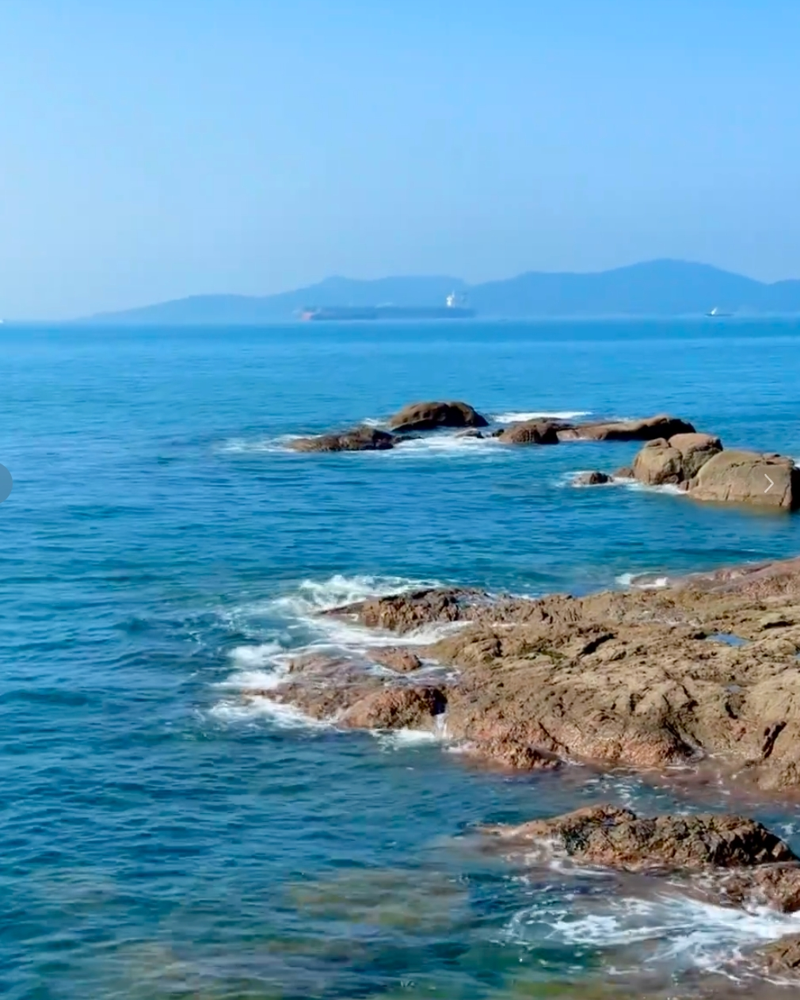
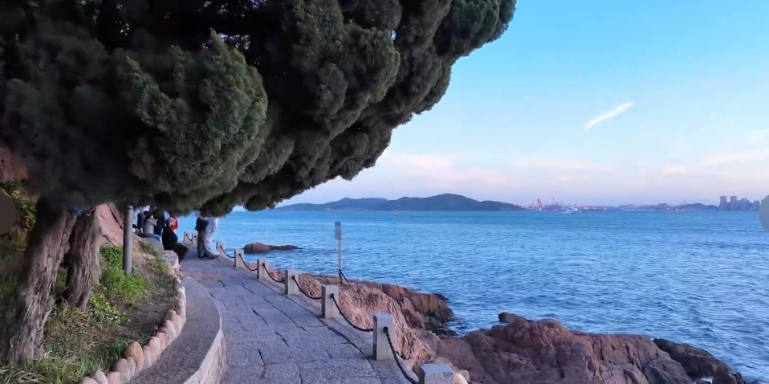
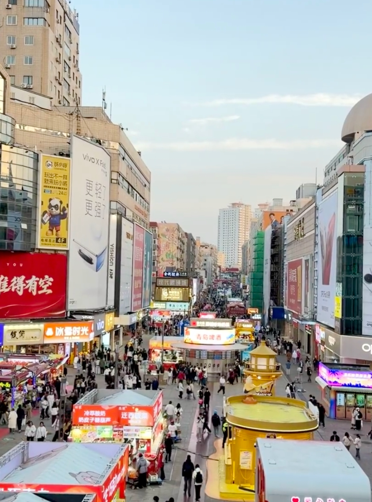
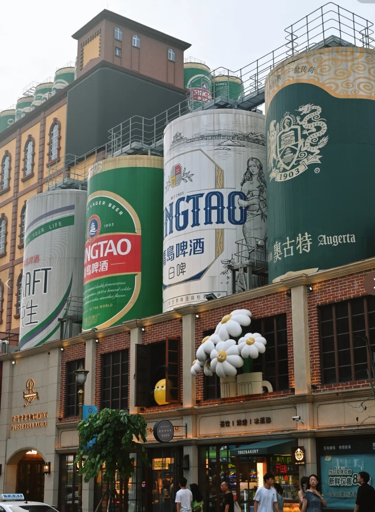
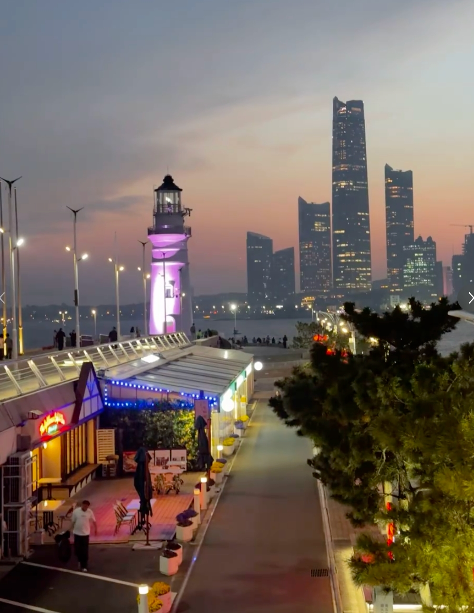
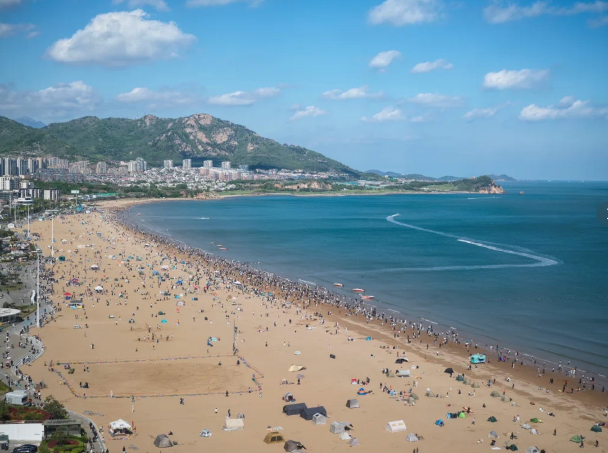
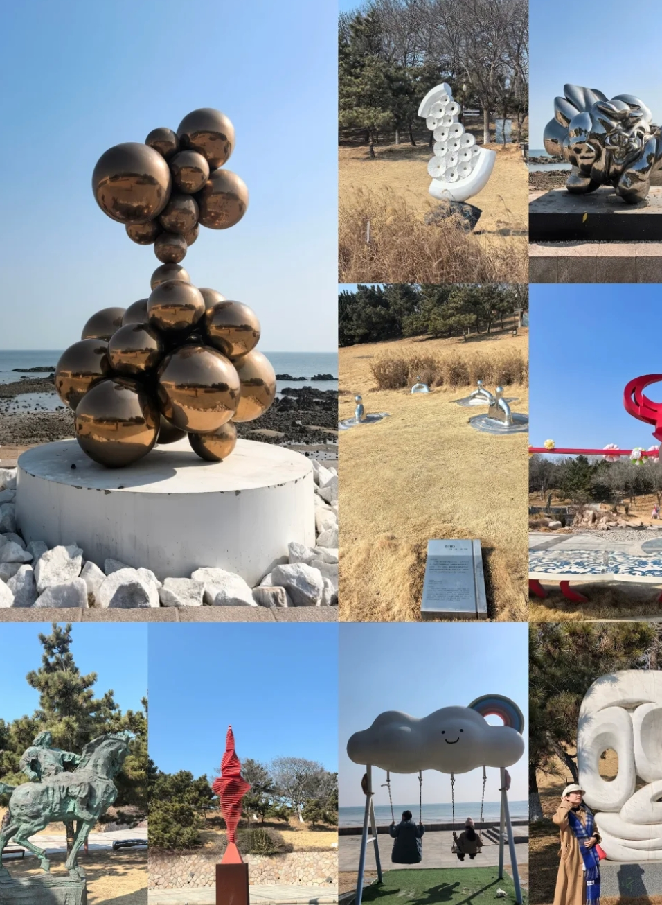
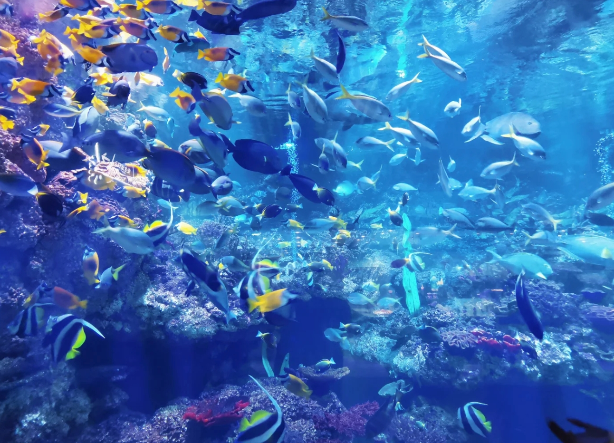
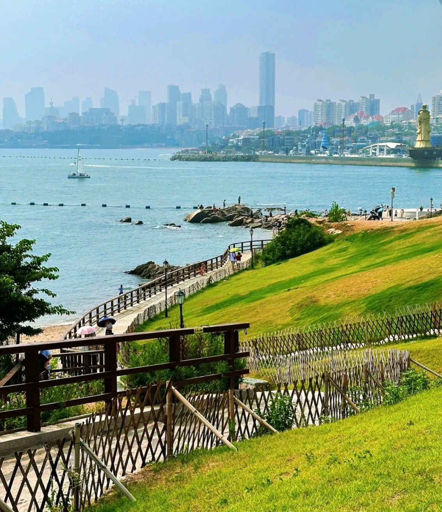

青岛海岸线全景
青岛是一座被海风眷顾的城市。红瓦绿树、碧海蓝天，德式老建筑与现代都市在这里自然交融。这份三天两夜的攻略，希望能帮你用最从容的节奏感受这座城市。
Day 1：老城人文
上午：栈桥 → 圣弥厄尔教堂 → 信号山公园
从栈桥开始你的青岛之旅。这座百年木栈道延伸入海，尽头的回澜阁是青岛的标志。清晨游客较少，适合拍照。


沿中山路直走约800米到达圣弥厄尔教堂。这座哥特式与罗马式结合的天主教堂建于1934年，双塔尖顶在蓝天下格外醒目，是青岛最具代表性的建筑之一。教堂前的广场是热门打卡点，建议早点到避开人流。
从教堂穿过老城区小巷步行约1.2公里到达信号山公园（门票15元）。山顶的旋转观景台可以360度俯瞰青岛老城：红色屋顶层层叠叠延伸到海边，这是理解青岛城市肌理最好的视角。

信号山顶俯瞰红瓦绿树
下午：大学路网红墙 → 鲁迅公园 → 小青岛
下山步行约600米即到大学路。红墙转角处的"网红墙"是经典机位，路两侧有不少独立咖啡馆和小店，适合闲逛休整。

大学路红墙转角
沿海边方向步行前往鲁迅公园。这里礁石嶙峋、红礁碧浪，沿海步道串联起松林与海岸，是青岛最有野趣的海滨公园。岸边坐着钓鱼的本地人，海风拂面，非常惬意。
紧邻鲁迅公园就是小青岛（门票10元）。这座小岛通过堤坝与陆地相连，岛上的白色灯塔是青岛的经典符号。站在岛上可以远眺栈桥和老城天际线，傍晚时分灯塔亮起尤为好看。


晚上：台东步行街
乘公交或打车前往台东步行街。整条街的建筑外墙画满了巨幅彩绘，入夜后霓虹灯亮起非常有氛围。这里小吃种类丰富——烤鱿鱼、锅贴、海鲜烧烤应有尽有，适合边走边吃。

台东步行街彩绘墙
Day 2：经典海岸线
上午：青岛啤酒博物馆 → 八大关
上午先去青岛啤酒博物馆（门票60元）。馆内完整展示了青岛啤酒百年历史和酿造工艺，参观结束还能免费品尝一杯原浆和一杯纯生，上午人少体验更佳。

青岛啤酒博物馆
之后前往八大关。这里是青岛最美的街区，200多栋风格各异的欧式别墅散落在绿树成荫的马路间，每条路都以中国古代关隘命名（韶关路、嘉峪关路等）。花1-2小时漫步其中，感受"万国建筑博览会"的风情。


下午：第二海水浴场 → 五四广场 → 奥帆中心
穿过八大关就是第二海水浴场。人少沙细，背靠别墅群，坐在沙滩上吹吹海风或踩踩水，是午后放松的好选择。
沿海岸线继续往东，到达五四广场。"五月的风"红色雕塑是青岛城市地标，广场面朝浮山湾，视野开阔。再沿海边栈道走十分钟即到奥帆中心——2008年奥运会帆船比赛举办地，港湾里停满白色帆船，灯塔与远处的高楼构成现代海滨画卷。


晚上：情人坝
情人坝就在奥帆中心尽头，是一条延伸入海的长堤。堤上酒吧餐厅林立，尽头的白色灯塔在夜色中格外浪漫。点一杯啤酒坐在海边，看对岸灯火倒映在海面上，是青岛最有情调的夜晚打开方式。

情人坝灯塔与夜色
小贴士：情人坝的餐厅价格偏高，推荐喝一杯感受氛围，正餐可以选在附近的闽江路美食街。
Day 3：东海岸休闲
上午：石老人海水浴场 → 雕塑园
石老人海水浴场是青岛最大的沙滩，以海中矗立的"石老人"礁石得名。相比市区浴场，这里沙滩更宽阔、海水更清澈，适合早起踏浪或发呆放空。

石老人海水浴场
沿海岸步行即到青岛雕塑园（免费）。园区依山傍海，草坪上散落着各种现代雕塑作品，海边栈道延伸在礁石与松林之间，是拍照散步的好去处。

雕塑园海边栈道
下午：极地海洋世界 → 小麦岛
青岛极地海洋世界（门票约260元）是亲子和海洋爱好者的好去处。白鲸、企鹅、北极熊等极地动物，加上海豚表演和海底隧道，可以逛上2-3小时。

极地海洋世界
最后一站留给小麦岛（免费）。这座伸入海中的小岛全岛覆盖草坪，三面环海，视野极其开阔。傍晚时分坐在山顶草地上看日落，海天一色，是为这趟旅程画上句号的完美方式。

小麦岛——青岛最美日落点
美食推荐
- 海鲜：辣炒蛤蜊、清蒸大虾、鲅鱼水饺、海肠捞饭、原壳鲍鱼
- 小吃：流亭猪蹄、排骨米饭、三鲜锅贴、海菜凉粉
- 推荐餐厅：船歌鱼水饺（连锁，品质稳定）、前海沿（本地海鲜馆）、万和春排骨米饭
- 啤酒：青岛啤酒原浆、精酿可以试试"TSINGTAO 1903"门店
住宿建议
- 老城区（栈桥/中山路附近）：靠近Day 1景点，有不少海景民宿，价格适中
- 市南东部（五四广场/香港中路）：商圈成熟、交通便利，适合喜欢现代化住宿的旅客
- 预算参考：经济型酒店200-350元/晚，海景民宿400-600元/晚
交通指南
- 到达：青岛胶东国际机场（距市区约1小时地铁）；青岛站/青岛北站（高铁）
- 市内：地铁覆盖主要景点（2/3号线最常用）；公交发达；打车起步价10元
- 建议：老城区景点集中，步行即可串联；东海岸方向乘地铁2号线或打车更方便
实用 Tips
- 青岛的景点大多沿海分布，合理规划路线可以避免折返
- 夏季（6-9月）是旺季，建议提前订住宿；春秋季节人少体验更好
- 海边风大，即使夏天傍晚也建议带一件薄外套
- 极地海洋世界建议提前在公众号购票，现场排队时间较长
- 塑料袋装啤酒是青岛特色——路边散啤论斤卖，值得体验
- 防晒很重要，海边紫外线强，帽子墨镜防晒霜都带上